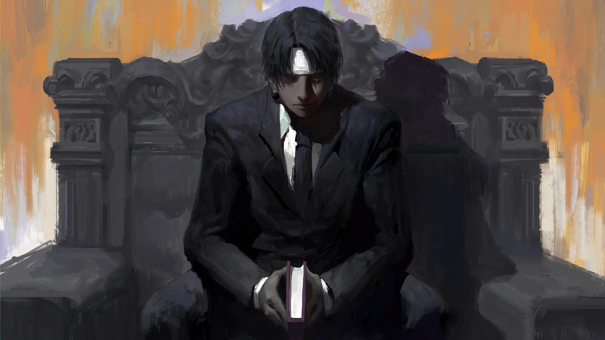
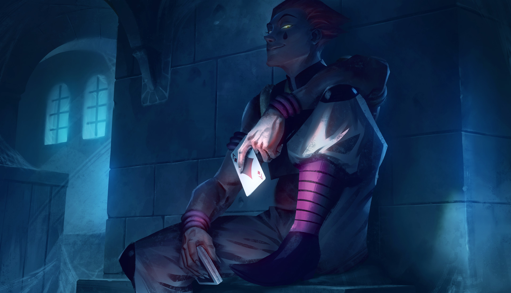

Chrollo Lucilfer

Chrollo Lucilfer é líder da Genei Ryodan, um grupo de ladrões conhecidos por roubarem
tesouros luxuosos. O mesmo é uns dos responsáveis pelo massacre do clã Kuruta,
e é temido pela sua força, por isso devido uma condição
Hisoka

Hisoka é retratado como um personagem egoísta, sádico e masoquista. Só faz o que quer, e só
faz se aquilo trouxer alguma forma de entretenimento para ele. Seu principal hobby é procurar pessoas
fortes para lutar, como também encontrar pessoas promissoras em tornarem-se fortes
Netero

Netero é um dos Hunters profissionais mais poderosos da série, ao ponto de ser considerado
o melhor usuário de Nen de sua época. Apesar de ser um idoso, ele mostrou ter ótimas habilidades
físicas, principalmente em lutas corpo a corpo, já que Isaac é um mestre em artes marciais.